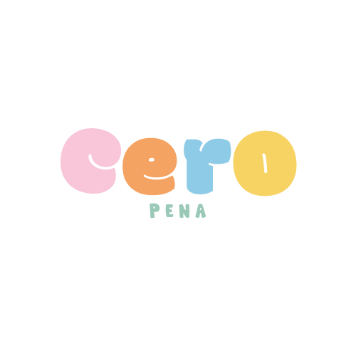
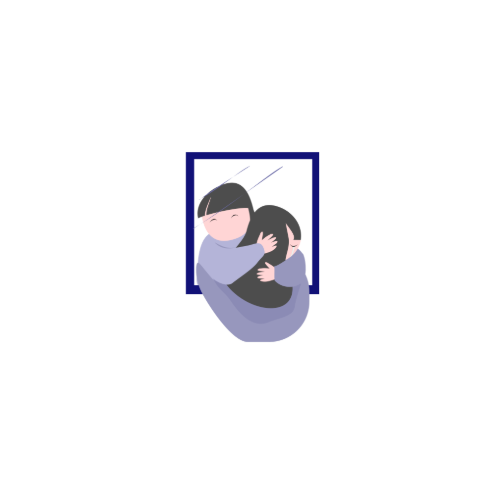
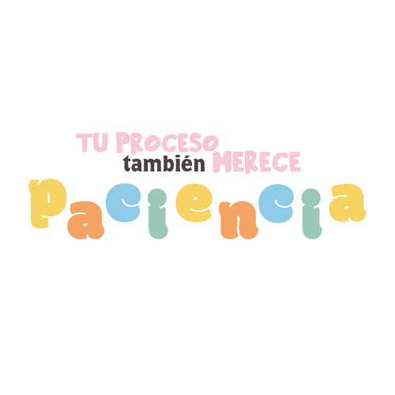
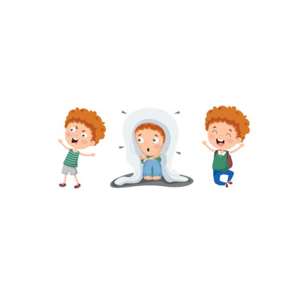
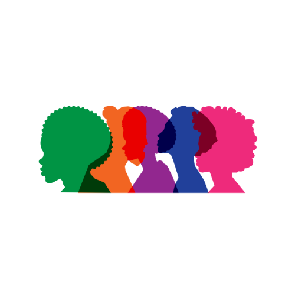

A veces los cambios llegan rápido. Otras veces parecen no llegar nunca. Y muchas veces nadie nos explica cómo sentirnos al respecto.

La pubertad puede traer cambios en la voz, el cuerpo, la piel, el vello y muchas otras cosas. Ninguna experiencia es exactamente igual a otra.


A veces aparecen inseguridades, emociones intensas o comparaciones con otras personas. Y eso puede sentirse confuso.

Y nadie debería sentirse mal por seguir entendiéndose.
Entender los cambios también es una forma de cuidarnos.